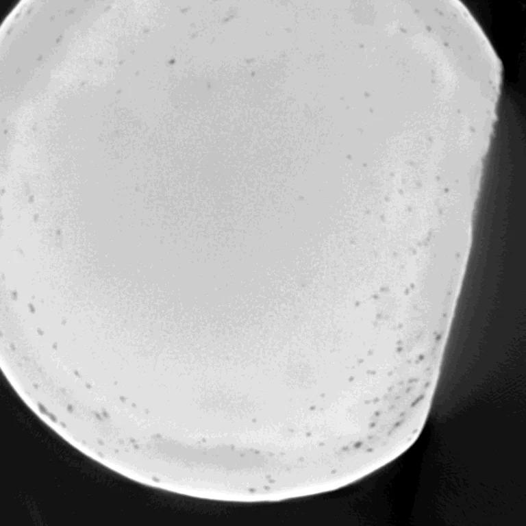
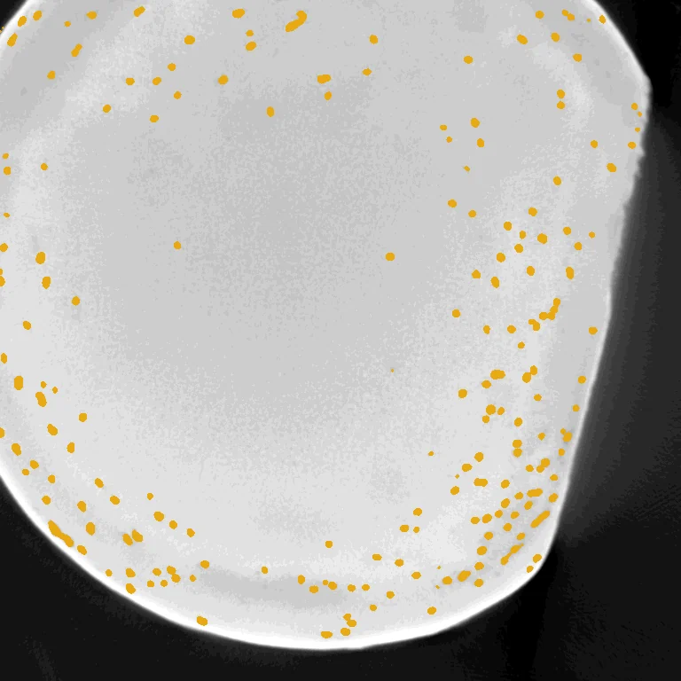
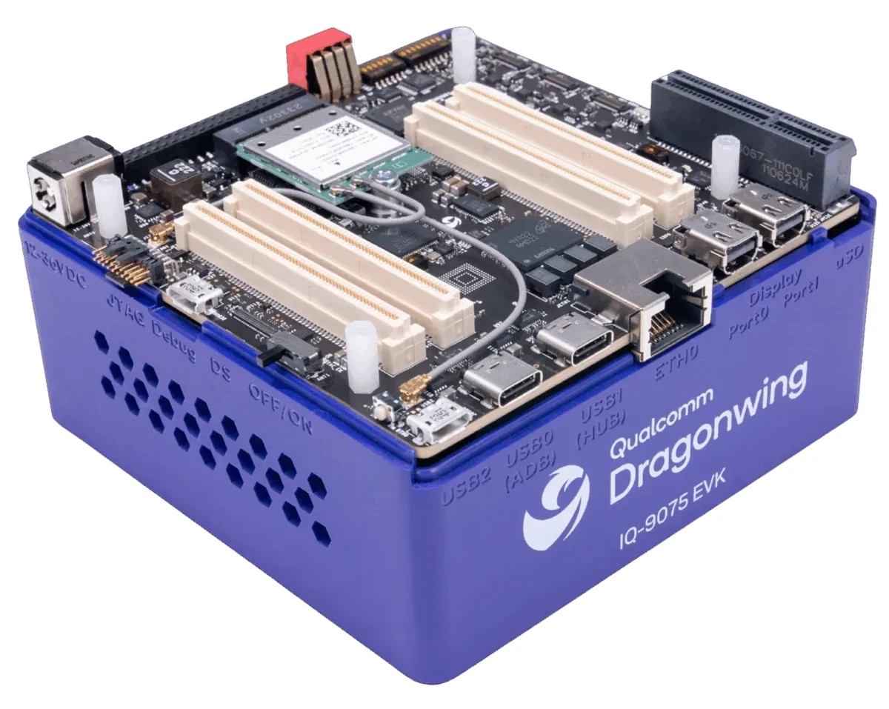
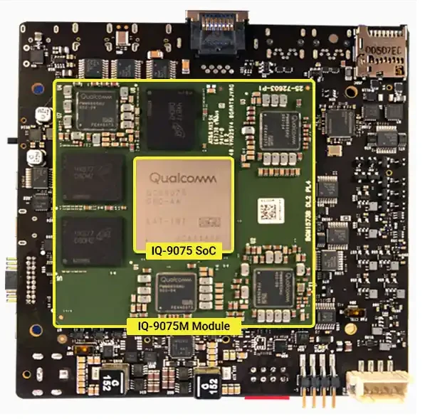

NeurIPS 2026 Workshop on On-Device Intelligence: Foundation Models under Real-World Constraints
DCM‑SAM
Defect-Conditioned Mixture of LoRA Experts for NPU-Deployed AM Defect Segmentation
1Industrial and Management Systems Engineering, 2Lane Department of Computer Science and Electrical Engineering, 3School of Mathematical and Data Sciences, West Virginia University. *Equal contribution. †Corresponding author.
- Runs on
- Qualcomm Dragonwing IQ-9075, every operator on the Hexagon NPU, at the full 1024×1024 input
- Trains
- 4.4% of the parameters per defect head, on a frozen SAM ViT-B
- Real scans
- 64.2% pore IoU on NIST XCT, after training only on synthetic slices
- Device fidelity
- On-device masks within 0.01% of pixels of the FP32 reference


DCM-SAM pore mask Input XCT sliceSmall defects, scarce labels, and a model that has to live at the machine
In metal additive manufacturing, parts are built layer by layer, and small fluctuations in laser power or melt-pool behaviour leave pores, lack-of-fusion voids and foreign inclusions behind. These decide fatigue life and whether a part can be certified, and X-ray computed tomography is now the standard way to find them.
The bottleneck has moved to reading the scans. Classical threshold pipelines need re-tuning for every dataset, and supervised segmentation networks carry the statistics of the data they were trained on. Segmentation foundation models such as Segment Anything (SAM) bring priors no industrial dataset could provide, but three properties of this task pull in different directions at once.
- The defects are tinyPores and inclusions span a few pixels even after a slice is upsampled to SAM's 1024×1024 input. Pore components in a single slice vary 40-fold in area. Full resolution is a hard floor: at 512×512 the same weights lose almost half their pore IoU.
- Real labels are rareAnnotated real volumes are scarce, so the model learns from a few hundred CycleGAN-synthesised slices and never sees a real image during training. A UNet++ trained from scratch reaches only 13.4% pore IoU on real NIST scans.
- The cloud is off the tableInspection data is often proprietary or export-controlled, and a workstation per machine does not scale across a fleet. The model has to run on an embedded accelerator, here a Qualcomm Hexagon NPU.
Put together, the task forces a foundation-model-scale backbone and full input resolution onto an embedded device at the same time. That combination is what this project is about: how to adapt SAM to two very different defect classes, and what it actually takes to make the result run on the NPU.
One frozen backbone, one expert bank per defect class
Pores are common and a few pixels wide. Inclusions are an order of magnitude rarer and cover under 1% of a slice. A single low-rank adapter shared by both is dominated by pore examples, which leaves inclusion learning noisy. Fully separate models avoid that but give up the frozen encoder they could share.
DCM-SAM takes the middle path. One frozen SAM ViT-B hosts a separate Conv-LoRA expert bank and mask decoder for each class. The heads share no trainable parameter and no gradient, each has its own optimizer, learning-rate schedule and gradient clipping, and both run without prompts.
![Architecture diagram. Panel a: an input slice enters SAM's ViT-B image encoder with injected Conv-LoRA. The encoder branches into a pore path with two experts and an inclusion path with eight experts, with no shared gradients. Each path produces an image embedding that goes to its own mask decoder, together with the embedding of a prompt encoder that receives no prompt, giving a pore mask and an inclusion mask. Panel b: inside Conv-LoRA, tokens are projected down by A, a top-k gating function routes them to one of M Conv3x3 plus GELU experts, the result is added back and projected up by B.](assets/figures/dcm-sam-architecture.webp)
Promptless SAM
SAM has an image encoder, a prompt encoder and a light mask decoder. The encoder holds 96% of ViT-B's parameters and turns a 1024×1024 slice into 4,096 patch tokens. An industrial slice can hold hundreds of defects, so clicking prompts is impractical. The prompt encoder is kept but given no prompt, and localisation comes entirely from the learned image embedding and a 4.1M-parameter mask decoder, initialised from SAM's and fully fine-tuned.
Conv-LoRA with a multi-scale expert ladder
LoRA adapts a frozen projection as h = W0x + (α/r)BAx, which treats every token independently. Conv-LoRA reshapes the bottleneck Z = Ax back into its spatial layout, the full patch grid in the four global-attention blocks and each 14×14 window elsewhere, and adds the output of one convolutional expert before projecting back up. Expert i upsamples the map by a factor i, applies a 3×3 convolution and GELU, and resamples back, so each expert sees the defect at a different scale.
What each expert sees
A 3×3 kernel on a map upsampled by i covers a region i times smaller. Choose how many experts a head gets and see the ladder of receptive fields it buys.
Training
Each head trains about 4.1M parameters, 4.4% of the ViT-B model. The adapter itself is only 0.08%; the rest is SAM's mask decoder. The loss per class is Dice plus focal plus a load-balancing term, Lc = λcLdice + Lfocal + 0.1 Lmoe, with the inclusion Dice weighted by 0.5. Both heads train on one stream of slices in which inclusion-positive images are oversampled fivefold, and the inclusion loss is averaged per image so one densely labelled slice cannot dominate a step. Optimisation is AdamW at 3×10-4 with layer-wise decay, warmup and cosine decay over 30 epochs, in bfloat16.
| Trainable, per head (ViT-B, M=8) | Parameters | Share of model |
|---|---|---|
| Frozen SAM encoder and prompt encoder | 89.7M | frozen |
| Conv-LoRA A and B | 73,728 | 0.079% |
| Convolutional experts | 3,648 | 0.004% |
| Gating | 384 | <0.001% |
| Mask decoder, fully fine-tuned | 4.06M | 4.3% |
| One head | 4.13M | 4.4% |

Qualcomm Dragonwing IQ-9075 EVK. Image: Qualcomm Dragonwing documentation.
The target: a Hexagon NPU on the Dragonwing IQ-9075
The IQ-9075 is an industrial edge platform whose Hexagon v73 NPU is rated at 100 INT8 TOPS. Every NPU number on this page was measured on the device itself, through Qualcomm AI Hub.
Two limits matter. The graph serializer refuses any compiled graph whose estimated allocation exceeds 3,670,016 KB, about 3.5 GiB, a target-dependent limit rather than a published hardware figure. And the roughly 8 MB of on-chip vector memory is far smaller than any backbone's attention matrix, so it is simply tiled through and does not decide what fits.

The IQ-9075 SoC on its module. Image: Qualcomm Dragonwing documentation.
Activations, not weights, decide what fits
All three SAM encoders compile for the Hexagon v73. At 1024×1024 only ViT-B executes. ViT-L and ViT-H compile but cannot allocate memory, and the reason is activation memory, not weights.
Each global-attention block forms a matrix with one entry per pair of tokens. The token count grows with the square of the input side, so the attention matrix grows with its fourth power. Halving the resolution cuts it sixteen-fold; halving the precision only halves it. Quantization does not move the ceiling either: the attention products QK⊤ and AV take two activation operands, and the backend has no validated integer kernel for that pairing. ViT-L still could not allocate with INT8 weights.
The adapter pushed ViT-B past the limit, and a rewrite brought it back
Exported as trained, the adapted ViT-B encoder needed 4.07 GiB at 1024×1024 against the 3.5 GiB ceiling, even though the stock encoder runs and the adapter holds only 0.09% of the encoder's parameters. The cause was two code paths meeting. The stock encoder had been exported through scaled-dot-product attention (SDPA), while the Conv-LoRA code inherits SAM's older eager attention, which builds the attention matrix through several full-size intermediates. Compiling every combination on the device separated the two effects.
Cosine against the PyTorch FP32 output on a real XCT slice. Only the adapter and eager attention together exceed the ceiling.
The rewrite folds the decomposed relative-position terms into one additive bias and calls a single scaled-dot-product attention. It is the same computation: encoder outputs agree to 1.2×10-5 and the final masks differ in 0 of 1,048,576 pixels. With it, all four graphs (an encoder and a decoder per head) run at 1024×1024 with no operator falling back to the CPU, and on one real slice per head the device masks differ from the FP32 reference in only 96 (pore) and 0 (inclusion) of 1,048,576 pixels.
Static routing turns the expert count into a runtime cost
A gate picks one expert with an argmax, which a static graph cannot express. For export, every expert is computed and one is selected with a one-hot mask built from argmax compared against arange(M), because the backend accepts neither scatter nor one-hot operators. Over eight slices this changes 13 of 8.4M mask pixels. The catch is cost: a GPU skips unselected experts for free, while the NPU pays for all of them.
Measured inference time of the four compiled graphs on the IQ-9075, FP16. Encoders are timed at 512×512, where the per-operator profiler attaches; the decoders measure about 15 ms at 1024×1024.
Expert i convolves a map upsampled by i, so expert compute grows as the sum of i²: 5 for two experts, 204 for eight, a factor of 40. The unchanged rest of the encoder dilutes this to the 4.1× measured slowdown.
Two more things follow. The decoder is about 500 times cheaper than the encoder, so defect-awareness costs one extra encoder pass and nothing else. And resolution cannot be traded for speed, even with retraining: a ViT-H model retrained at 512×512 still ends 5.6 points below its full-resolution twin on pores.
Encoder latency at 1024×1024 has not been measured: the per-operator profiler only attaches at 512×512 on this device. Every timing here is at that resolution.
How many experts, and does it survive real scans?
We swept each head's expert count with the other fixed at eight, in both directions, and trained the corner and cross configurations directly. Nine ViT-B configurations in total, each scored on five synthetic test splits and five real NIST specimens.
Three findings stand out. XCT-SAM's default of eight experts in both heads performs worst on synthetic pores, at 25.8, yet eight pore experts alone is fine: (8,1) has the best pore IoU. The per-head optima do not compose: each sweep picks two experts, but (2,2) loses to (2,8) on both classes. And the right mixture size depends on the backbone: ViT-H is flat above two experts, while ViT-B degrades when both heads are large.
We deploy (2,8), the best-balanced configuration with a summed synthetic IoU of 85.0. Three others sit within one point of it, which a single seed cannot separate, so (2,8) is a deployment choice rather than a claim of a global optimum.
On real NIST scans the picture flattens. Every configuration transfers, with pore IoU about 30 points higher than on synthetic data, likely because pores are more clearly resolved in real scans. The 10.7-point synthetic spread shrinks to 2.1 points, below the noise floor.
Against published baselines
| Method | Backbone | Pores, synthetic | Inclusions, synthetic | Pores, NIST |
|---|---|---|---|---|
| SAM, zero-shot | ViT-H | 14.3 | 29.5 | 49.4 |
| UNet++ | n/a | 14.0 | 10.2 | 13.4 |
| MedSAM | ViT-H | 16.3 | 32.5 | 33.8 |
| SAM-Med2D | ViT-H | 18.7 | 36.0 | 57.8 |
| Conv-LoRA-SAM | ViT-H | 27.7 | 24.1 | 54.6 |
| XCT-SAM | ViT-H | 32.5 | 36.4 | 58.5 |
| DCM-SAM (ours) | ViT-B | 36.1 | 48.9 | 64.2 |
| defect-bearing slices only | 32.7 | 11.9 | 64.2 |
Read this comparison with care. The baselines use ViT-H, seven times larger than our ViT-B, and were not re-run under our protocol. Image-averaged IoU flatters inclusions, which are absent from most slices: counted over defect-bearing slices only, our inclusion IoU is 11.9, not 48.9. On NIST, 64.2 drops to 58.8 without specimen test6, whose post-processing is specimen-specific, about level with XCT-SAM's 58.5.
Per-specimen results on real NIST XCT
| Specimen | IoU | Dice | Tol-F1 | Precision | Recall |
|---|---|---|---|---|---|
| test2 | 50.0 | 66.5 | 85.1 | 74.2 | 100.0 |
| test3 | 64.2 | 78.0 | 94.1 | 99.2 | 90.0 |
| test4 | 54.5 | 70.4 | 89.0 | 80.6 | 99.9 |
| test5 | 66.6 | 79.9 | 96.2 | 98.3 | 94.2 |
| test6* | 85.4 | 92.0 | 96.8 | 93.8 | 100.0 |
| Mean | 64.2 | 77.4 | 92.2 | 89.2 | 96.8 |
Shrink the resolution or shrink the backbone?
There are two ways to fit the device, and they cost different classes. Dropping resolution costs pores; dropping the backbone costs inclusions. We kept full resolution, because pores drive certification and are the only class real data lets us score.
| ViT-H, 1024² | ViT-H, 512² (raw / rescaled) | ViT-B (2,8), 1024² | |
|---|---|---|---|
| Pore IoU, image-averaged | 37.3 | 31.7 / 30.8 | 36.1 |
| Pore IoU, defect-only | 35.8 | 27.9 / 27.6 | 32.7 |
| Inclusion IoU, image-averaged | 52.5 | 51.8 / 46.6 | 48.9 |
| Inclusion IoU, defect-only | 15.5 | 9.3 / 20.7 | 11.9 |
| Real NIST pore IoU | n/a | n/a | 64.2 |
| Runs on the IQ-9075 with adapters | no | not tested | yes, verified |
Look at the predictions yourself
Outputs of the released (2,8) checkpoint on synthetic test slices. Switch between the input, the ground truth and the prediction, compare the two side by side, or turn on the magnifier, since most defects here are only a few pixels across. The last example is a hard case, picked to show where the model still struggles.
What this does not show yet
Every configuration was trained once, and an early seeding confound swung pore IoU by 4.9 points before it was fixed, so differences under about three points are not resolved. The (2,8) choice was made on the synthetic benchmark; on NIST it is the lowest of the nine, though by only 2.1 points.
The baselines come from XCT-SAM's paper rather than a protocol-matched re-run. The deployment is FP16: INT8 was blocked at the operator level for the attention products, so no integer-quantized accuracy is reported. On-device equivalence was checked on one real slice per head, and full-resolution encoder latency is unmeasured. Because the adapters sit inside the encoder, the encoder runs once per head and each binary carries its own copy of the frozen weights, so sharing the backbone saves storage during training but not on the device.
Repeated seeds, a protocol-matched baseline comparison, and on-board timing of the 1024×1024 binaries are the next steps.
Cite this work
@inproceedings{rahaman2026dcmsam,
title = {{DCM-SAM}: Defect-Conditioned Mixture of {LoRA} Experts for
{NPU}-Deployed {AM} Defect Segmentation},
author = {Rahaman, Md Mushfiqur and Hasan, Md Mahedi and
Ahmed, Imtiaz and Das, Srinjoy},
booktitle = {NeurIPS 2026 Workshop on On-Device Intelligence: Foundation
Models under Real-World Constraints},
year = {2026}
}
Acknowledgements
This work was supported by a gift from Qualcomm Incorporated. We acknowledge the Pacific Research Platform, NSF Project ACI-1541349, and Larry Smarr (PI, Calit2 at UCSD) for computing infrastructure used in some experiments, and the National Artificial Intelligence Research Resource (NAIRR) Pilot and the Delta system at the National Center for Supercomputing Applications (NSF award OAC 2005572), under NAIRR Pilot award NAIRR250183.